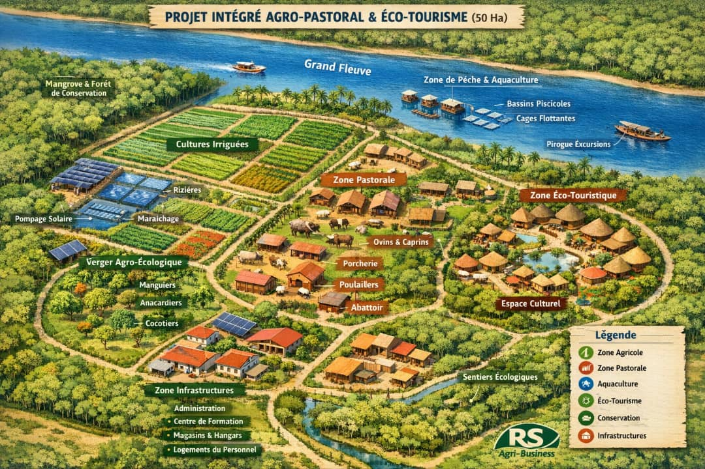
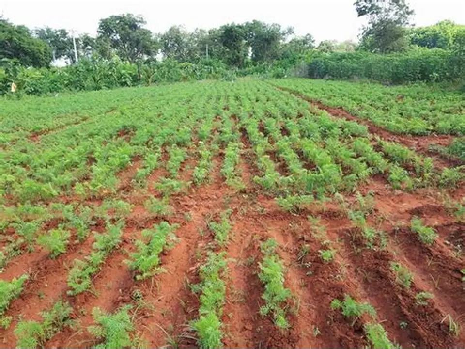
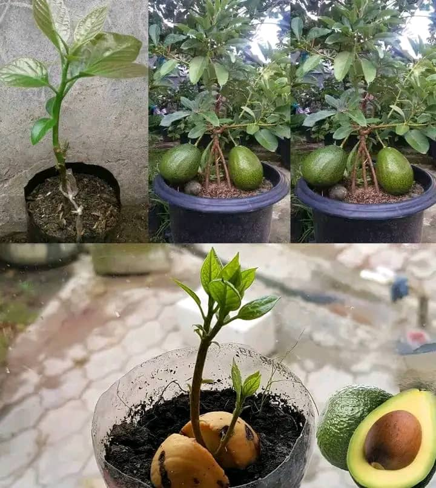
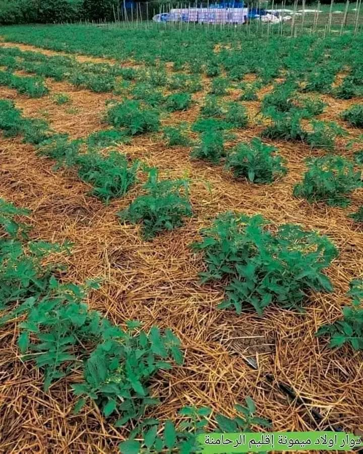

Accompagnement personnalisé
Nous travaillons avec vous pour comprendre vos besoins et vos objectifs, et nous vous proposons des solutions adaptées pour améliorer votre production et votre rentabilité.

Montage et suivi de projets
Nous vous aidons à élaborer des plans d'affaires solides et à les mettre en œuvre, en vous accompagnant tout au long du processus de réalisation.

Conseil agricole expert
Nos experts vous fournissent des conseils pratiques et des recommandations pour améliorer vos pratiques agricoles et augmenter votre productivité.
Pourquoi nous choisir ?
Experts expérimentés
Une équipe d'ingénieurs agronomes avec plus de 10 ans d'expérience terrain en agriculture biologique.
Solutions sur mesure
Des accompagnements adaptés à votre type de production, votre région et vos objectifs commerciaux.
Suivi personnalisé
Un suivi régulier sur le terrain et des ajustements en temps réel pour garantir votre réussite.
Résultats concrets
+40% de rendement en moyenne pour nos clients, certification bio obtenue dans 95% des cas.
Certification garantie
Nous vous accompagnons dans toutes les démarches de certification biologique (Ecocert, BioSuisse, etc.).
Accompagnement post-projet
Un suivi même après la fin de la mission pour assurer la pérennité de votre exploitation.
Notre expertise en images





.webp)


.webp)


